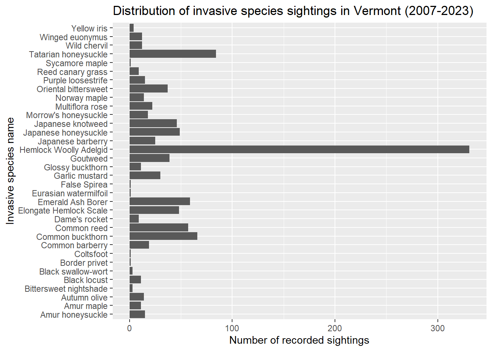
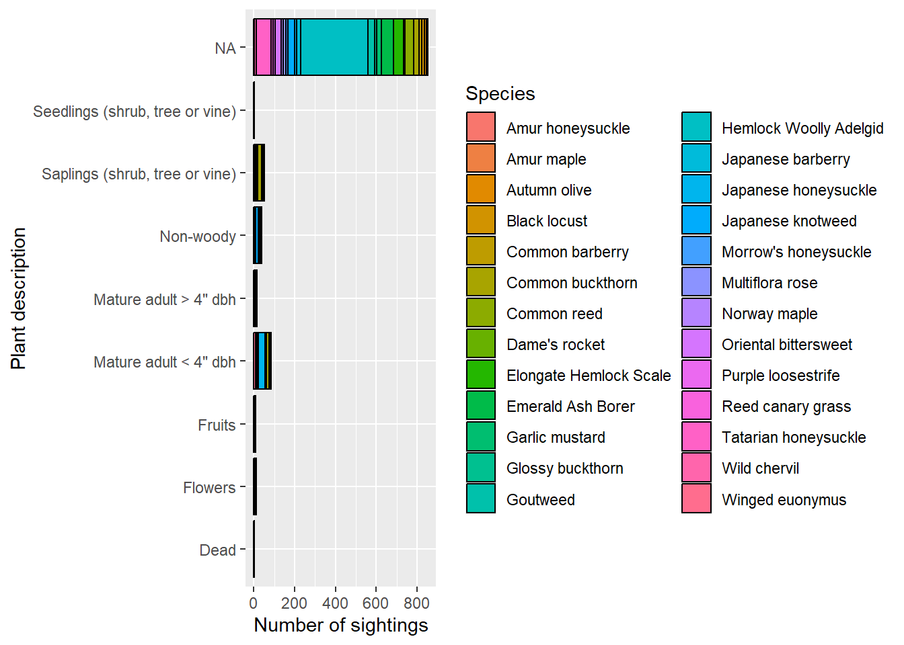
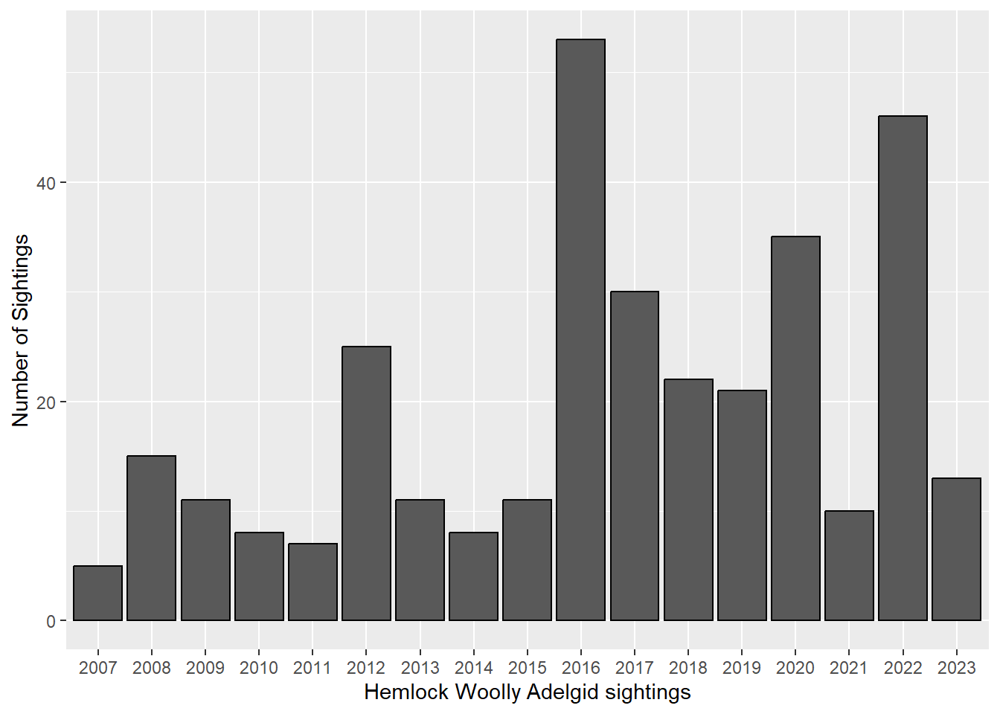
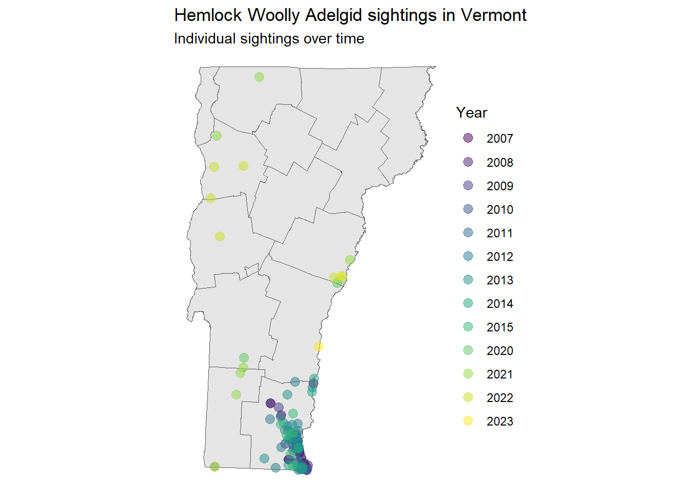
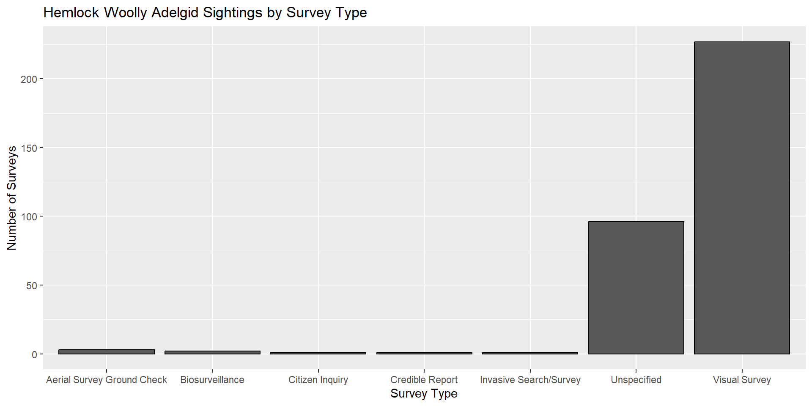

Invasive Species Encounters and Treatments in Vermont
Rows: 1078 Columns: 30
── Column specification ────────────────────────────────────────────────────────
Delimiter: ","
chr (22): SiteName, InvasiveName, ObservationDate, Observer, SurveyType, Tow...
dbl (8): X, Y, ObservationID, Latitude, Longitude, GrossArea, InfestedArea,...
ℹ Use `spec()` to retrieve the full column specification for this data.
ℹ Specify the column types or set `show_col_types = FALSE` to quiet this message.0.1 Introduction
The goal of this project is to understand invasive species trends in Vermont and identify certain species that may be causing the most harm to native ecosystems.
This project utilizes data from the Vermont Center for Geographic Information (VCGI).
As of publishing, the data is hosted at this link: https://catalog.data.gov/dataset/invasive-species-812ab
0.2 Understanding invasive species
Code

0.3 What is Hemlock Wooly Adelgid?
Code

As you can see, Hemlock Woolly Adelgid, or HWA, is categorized under the label “NA.” This is because it isn’t a plant at all! HWA is actually an aphid-like insect native to East Asia. According to the Vermont Department of Forests, Parks and Recreation, HWA can infest and kill native Eastern Hemlock trees, wreaking havoc on local ecosystems. HWA uses its long mouthparts to suck out a tree’s starches, preventing the tree from delivering nutrients to its branches and needles.
Eastern Hemlock trees are important to North American ecosystems for a number of reasons. The evergreen trees act as year-round shelters for a variety of species, from lichens on the forest floor to warblers and owls in the canopy. Local deer and moose populations also rely on hemlock needles for nutrition. Additionally, the trees’ thick foliage create shade, helping regulate temperatures in terrestrial and aquatic environments.
Further reading: https://fpr.vermont.gov/sites/fpr/files/Forest_and_Forestry/Forest_Health/Library/VTFPR_HWAinVT_RecommendationsforLandownerResponse.pdf https://dec.ny.gov/nature/animals-fish-plants/insects-and-other-species/hemlock-woolly-adelgid
Code

0.4 Mapping Hemlock Woolly Adegild sightings
Code
# Spatial point map of invasive species encounters
invasive_boundaries |>
mutate(GrossArea = as.numeric(GrossArea)) |>
inner_join(Top_Invasive_Species) |>
filter(InvasiveNa == "Hemlock Woolly Adelgid") |>
ggplot() +
geom_sf(data = vt_boundaries) +
geom_sf(aes(color = year),
size = 3,
alpha = 0.5) +
labs(title = "Hemlock Woolly Adelgid sightings in Vermont", color = "Year", y = "Latitude", x = "Longitude", subtitle = "Individual sightings over time") +
scale_color_viridis_d() +
theme_void()Joining with `by = join_by(SiteName, Observer, SurveyType, Latitude, Longitude,
Town, GrossArea, Assessor)`Warning in sf_column %in% names(g): Detected an unexpected many-to-many relationship between `x` and `y`.
ℹ Row 1 of `x` matches multiple rows in `y`.
ℹ Row 1 of `y` matches multiple rows in `x`.
ℹ If a many-to-many relationship is expected, set `relationship =
"many-to-many"` to silence this warning.
As this map makes clear, Hemlock Woolly Adelgid sightings were highly concentrated in Windham County until 2020. Since then, it has been spotted in various locations across the state. This is likely due to a large infestation of HWA in Massachusetts which borders the county. According to an article by the University of Massachusetts (linked below), HWA landed in southern New England on the winds of a hurricane in 1980 from more southern states. It would make sense, then, that HWA reached Vermont by first travelling north through Massachusetts.
Article link: https://www.umass.edu/agriculture-food-environment/landscape/fact-sheets/hemlock-woolly-adelgid-frequently-asked-questions
Code
pal <- colorFactor(
palette = "magma",
domain = HWA_invasive$year,
ordered = FALSE
)
leaflet(data = HWA_invasive) |>
addTiles(group = "OSM (default)") |>
addProviderTiles(providers$CartoDB.Positron, group = "Positron (minimal)") |>
addProviderTiles(providers$Esri.WorldImagery, group = "World Imagery (satellite)") |>
addCircles(lng = ~Longitude, lat = ~Latitude, group = ~paste(year), color = ~pal(year)) |>
addLayersControl(
baseGroups = c(
"OSM (default)",
"Positron (minimal)",
"World Imagery (satellite)"
),
overlayGroups = groups_all,
options = layersControlOptions(collapsed = FALSE)
)0.5 How can we spot HWA?
Code

Though we do not have data on the success rates of each survey type, we can assume that visual survey is a relatively effective survey type based on how many HWA have been spotted by using this method.
In order to track future HWA outbreaks, the Vermont state government should continue to fund visual surveys of HWA across the entire state.